Reachability
Reachability
把一張圖想像成道路地圖，把圖上的點想像成地點，把圖上的邊想像成道路。現在我們在意的是：由某一個地點開始，沿著道路不斷行進，可以到達哪些地點？
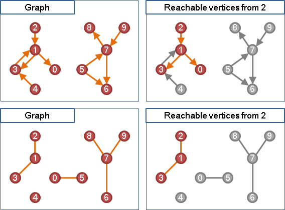從起點開始，使用Graph Traversal，就可以找出所有可以到達的地點。
Connected（Reachable）
「連通」是一個形容詞，是指「有路可通」的意思。
對於一張圖上的兩個點來說，雙向都有路可通，這兩個點就「連通」。
在無向圖當中，兩個點之間邊邊相連，就形成「連通」。在有向圖當中，要注意邊的方向，如果兩個點之間，雙向都有路可通，就是「強連通」；至少單向有路可通（也可以雙向都通），就是「弱連通」。
Graph Traversal或者Transitive Closure都可以判斷連通。
Transitive Closure
Transitive Closure
一張圖的「遞移閉包」也是一張圖，用來記錄由一點能不能走到另一點的關係，如果能走到，則兩點之間以邊相連。
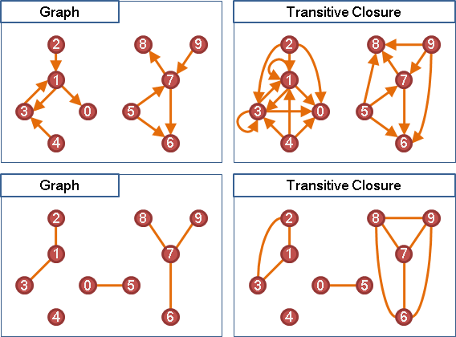只要對圖上每一個點都做一次Graph Traversal，就可以求出「遞移閉包」了。
時間複雜度為V次Graph Traversal的時間。圖的資料結構是adjacency matrix時，時間複雜度為O(V^3)；圖的資料結構是adjacency lists時，時間複雜度為O(VE)。
UVa 10926
Transitive Closure: Matrix Multiplication
楔子
把一張圖想像成道路地圖，把圖上的點想像成地點，把圖上的邊想像成道路。現在我們在意的是：由某一點開始，走過N條道路後，可以到達哪些點？
最簡單的莫過於走過零條道路的情況了，哪裡都去不了。至於走過一條道路的情況，可以到達起點附近的點。
【註：讀過Shortest Path章節的讀者，應該很快就會聯想到：由一點到另一點最少需要走過幾條道路。但是這和此處所言並不相同。】
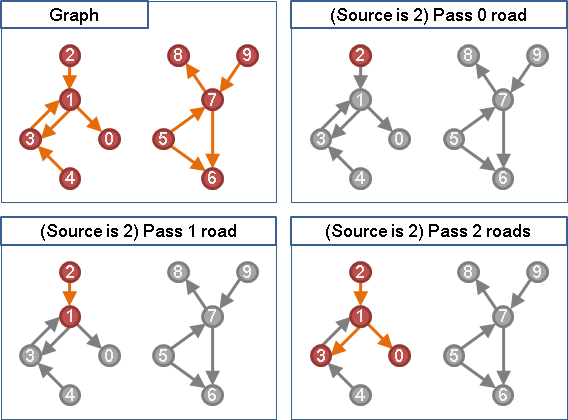當N很大時，各位可能會想到用Graph Traversal來試試看──可是路線是環的話就沒轍了。環經過同一個點很多次，而Graph Traversal只能拜訪一個點一次。
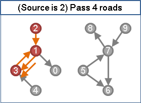UVa 10681
走一步是一步，Incrememtal Method
要找出一張圖的Transitive Closure，也就是要找出圖上每一個點，走了一條、兩條、…… 、無限多條道路之後，會到達圖上哪些點。
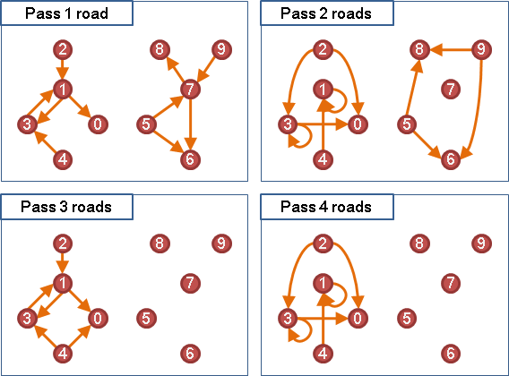然而，一張圖上最多只有V個點，要從一點走到另一點，走V-1條道路之內一定到得了，否則不論走多少條都一定到不了。
因此，要找出一張圖的Transitive Closure，只要找出圖上每一個點，走了一條、兩條、…… 、V條道路之後，會到達圖上哪些點就可以了。
找出所有中繼站，拉出新路線，Enumeration
如果一張圖上，由i點可以走到某一個j點、這個j點又可以走到k點，那麼就可以由i點走到k點。
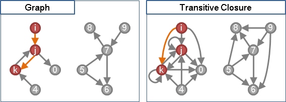窮舉所有可能的j點，就可以判斷出由i點是否能走到k點了！
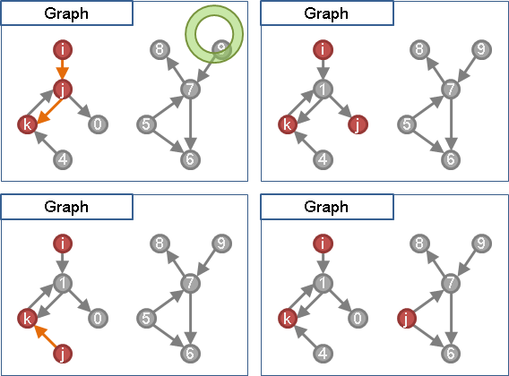只要計算一下圖上每一個i點和每一個k點，就可以知道圖上各個點可以走到哪裡去了。不過這只能找出走了兩條道路的情況。
p2(i, k) = ( p1(i, 0) AND p1(0, k) ) OR
( p1(i, 1) AND p1(1, k) ) OR
... OR
( p1(i, 9) AND p1(9, k) )
pN(i, k)：由i點能不能走到k點，恰走了N條道路的時候。
兩條加一條就是三條，三條加一條就是四條。走了三條道路、走了四條道路等等的情況，可以以逐次加一條道路的方式，慢慢累積而得。
pN+1(i, k) = ( pN(i, 0) AND p1(0, k) ) OR
( pN(i, 1) AND p1(1, k) ) OR
... OR
( pN(i, 9) AND p1(9, k) )
pN(i, k)：由i點能不能走到k點，恰走了N條道路的時候。
矩陣相乘，Modeling
i點到j點，j點到k點，窮舉所有j點──其實就和矩陣乘法的規則一樣。如果把一張圖儲存成adjacency matrix，那麼直接拿這張圖的adjacency matrix自己乘上自己，並且把加法改成OR運算，乘法改成AND運算，相乘的結果就是走過兩條道路的情況了！
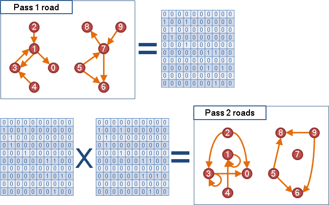同理，走了兩條道路的矩陣，再乘上一次原圖的adjacency matrix，就會成為走了三條道路的情況。如此一來，若要求走了N條道路的情況，就是原圖的adjacency matrix的N次方。
演算法，Iterative Method
現在回頭談Transitive Closure要怎麼求。既然一張圖的Transitive Closure只需要找出走了一條、兩條、…… 、V條道路的情形，所以一張圖的Transitive Closure就是此圖的adjacency matrix的1次方、2次方、…… 、V次方，然後統統OR起來就對了。
由於OR的性質，事實上還可以一邊OR矩陣、一邊乘矩陣，結果仍會正確。
p1~N+1(i, k) = p1~N(i, k) OR
( p1~N(i, 0) AND p1(0, k) ) OR
( p1~N(i, 1) AND p1(1, k) ) OR
... OR
( p1~N(i, 9) AND p1(9, k) ) OR
p1~N(i, k)：由i點能不能走到k點，當走了1條、2條、…… 、N條道路的時候。
矩陣的V次方，可參考本站文件「Matrix」，藉由Divide and Conquer便能以O(logV)次矩陣乘法求得。矩陣相乘一般需時O(V^3)，當然還可以更快。
另外這個方法也可以用來計算從一點走到另外一點，走了N步之後總共有幾種走法。各位可以想想看。
Transitive Closure: Warshall's Algorithm
把兩點之間的所有路線，依照中繼點來分類
一條路線的中繼點，可能有第0點、第1點、…… 第V-1點。現在把i點到j點的路線分成兩種：經過第V-1點、未經過第V-1點。接著兩種再各自細分為：經過第V-2點、未經過第V-2點。如此不斷細分下去直到：經過第0點、未經過第0點。
tc(i, j, k) = tc(i, k, k-1) && tc(k, j, k-1) || tc(i, j, k-1)
^^^^^^^^^^^^^^^^^^^^^^^^^^^^^^ ^^^^^^^^^^^^^
經過第k點 沒有經過第k點
tc(i, j, k)：由i點能不能走到j點，當中繼點只能是第0點到第k點的時候。
過程可以想成是一次增加一個中繼點，隨時更新所有路線。
採用Dynamic Programming，時間複雜度是O(V^3)，空間複雜度可以精簡至O(V^2)。
UVa 280 12017
中繼點順序
分類時，事實上可以採用任意的中繼點順序。例如，把i點到j點的路線分成兩種：經過第V-3點、未經過第V-3點。接著兩種再各自細分為：經過第5點、未經過第5點。如此不斷細分下去，直到圖上每一點都用過為止。
也就是說，在k的迴圈當中，k值並非一定要從0跑到V-1才行，k值其實可以隨意變動，只要讓0到V-1的數字都剛好出現過一次就行了。
Transitive Closure: Divide and Conquer
精簡掉不必要計算的地方，去掉強連通分量
環上的點肯定是相互連通，可以免算Transitive Closure。因此可以直接收縮圖上所有環，再去找Transitive Closure。沒有環的圖有很強的性質。
把圖分作兩部分，Divide and Conquer
精簡過後的圖進行Topological Sort，然後將所有點依照順序先後，分成前半群和後半群。這時便可以輕易的遞迴求得這兩群點的Transitive Closure，也可以輕易的求得前半群往後半群的遞移情況。
精簡過後的圖進行Topological Sort，其adjacency matrix會呈現一個可愛的上三角矩陣。將此矩陣切成四份，前半群點的Transitive Closure是左上角矩陣，後半群點的Transitive Closure是右下角矩陣，前半群往後半群的遞移情況是右上角矩陣。 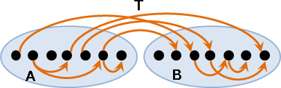
演算法
一、收縮圖上所有環。 例如使用收縮圖上所有Strongly Connected Component的演算法。 二、進行拓撲排序（圖上無環），以利Divide and Conquer將圖分成兩部分。 三、把排序結果分成前半和後半兩群點，分別遞迴計算這兩群點的遞移閉包。 四、於Divide and Conquer的合併階段，計算前半群走到後半群的遞移情況。 至於由後半群往前半群是沒有道路的，因為拓撲排序。
1. 令G為精簡過後的圖的adjacency matrix。 G均分成四份，左上為A，右上為T，左下為0矩陣，右下為B。 2. 遞迴求出A*。遞迴求出B*。 3. G*均分成四份，左上會是A*，右上會是A*TB*，左下會是0矩陣，右下會是B*。
時間複雜度正比於矩陣相乘的時間複雜度。
http://www.student.cs.uwaterloo.ca/~cs466/Old_courses/F08/transitiveClosure.pdf
延伸閱讀：分成前中後三群
當圖的構造特殊時，剛好可以分成三群，而且只有前群到中群、中群到後群的邊，便可以使用此式子。
1. 令G為圖的adjacency matrix。 G均分成九份，上為A，右為B，其餘皆為0矩陣。 2. G*均分成九份，上仍為A，右仍為B，右上為AB， 左上、中、右下為單位矩陣，其餘皆為0矩陣。
延伸閱讀：直接Divide and Conquer
這裡再提供一個完全不用求Strongly Connected Component，就可以直接做Divide and Conquer，其原理是以集合為單位來求Transitive Closure。時間複雜度正比於矩陣相乘的時間複雜度。
1. 令G為圖的adjacency matrix。 G均分成四份，左上為A，右上為B，左下為C，右下為D。 2. 遞迴求出D*。 3. 令E = A + BD*C，並且遞迴求出E*。 4. G*均分成四份，左上會是E*，右上會是E*BD*，左下會是D*CE*，右下會是D* + D*CE*BD*。
Connectivity
Regular Graph / Factor
無向圖當中，「Regular Graph」是每一點都連著一樣多的邊的圖；「Factor」是每一點都連著一樣多的邊的子圖。
簡而言之：每個點的度數都一樣的圖、子圖。
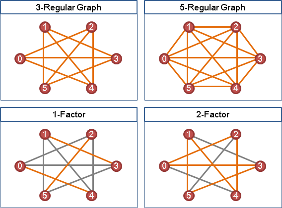我們可以在名稱開頭冠上數字、橫槓，明確呈現度數。例如1-Regular Graph是每個點都連著一條邊的圖，2-Factor是每個點都連著兩條邊的子圖。
Complete Graph / Clique
無向圖當中，「完全圖Complete Graph」是所有兩點之間都有一條邊的圖；「團Clique」是所有兩點之間都有一條邊的子圖。
簡而言之：每個點的度數都是V-1的圖、子圖。
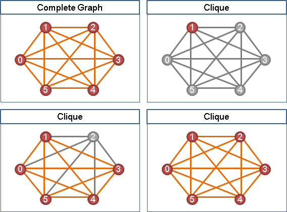Degree
無向圖當中，一個點的「度Degree」，就是碰觸鄰邊的次數。沒有自環的情況下，「度Degree」等於鄰邊數量。
有向圖當中，可以進一步細分為「入度In-degree」與「出度Out-degree」，分別是指入邊的數目、出邊的數目。
「度」可以呈現一個點與其他點的聯繫強度。
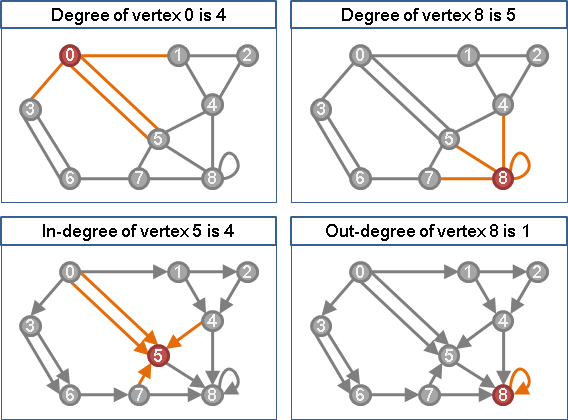有向圖當中，因為每條邊都是有始有終，所以整張圖的入度總數目必等於出度總數目。
無向圖當中，以邊為主角，每條邊碰到兩個點。所有碰到的點的度數加起來，就是邊數的兩倍。換句話說，整張圖的度數總和必等於邊數的兩倍。
UVa 12035
給定各點degree求原圖（Erdos-Gallai Theorem）
http://mathworld.wolfram.com/GraphicSequence.html
小遊戲：http://armorgames.com/play/5900/king-of-bridges
小遊戲：http://www.agame.com/game/connectors.html
求得其中一種可能性，時間複雜度O(V^2)。
UVa 10720 11414
給定各點degree求原圖（Havel-Hakimi Algorithm）
度數按照大到小排序
d1 d2 d3 ... is graphical
iff d2-1 d3-1 ... dd1+1-1 dd1+2 dd1+3 dd1+4 ... is graphical
|-------- d1 -------|
求得其中一種可能性，時間複雜度O(V^2)。
Oriented Graph
一張無向圖，無向邊改成有向邊，稱做「定向圖」。替每一條邊選擇一個方向，稱作「定向Orientation」。
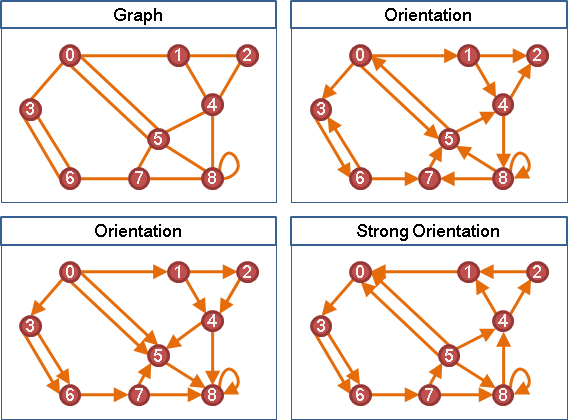根據Robbins' theorem，沒有橋的無向圖，一定能改成強連通的Orientation，反之亦然。
UVa 610 10972
Graph Width（Under Construction!）
Graph Width
http://mathsci.kaist.ac.kr/~jisujeong/jisu_grow2015.pdf http://link.springer.com/article/10.1007/s00453-015-0033-7
Tree Decomposition
http://www.cs.uu.nl/docs/vakken/an/an-treewidth.pdf http://www.mi.fu-berlin.de/en/inf/groups/abi/teaching/lectures_past/WS0910/V____Discrete_Mathematics_for_Bioinformatics__P1/material/scripts/treedecomposition1.pdf http://web.engr.illinois.edu/~jeffe/teaching/comptop/2009/notes/treewidth.pdf
一、樹分解的點，是原圖的點集合。 二、圖上的邊的兩端點，位於樹分解的同一點。 三、圖上的點，位於樹分解的某棵連通子樹的每一點。 四、樹分解最小的點，大小減一，就是寬度。
Partial k-Tree
https://code.google.com/codejam/contest/801485/dashboard#s=a&a=1
UVa 12615
Clique Tree
ICPC 7458
Tree Root
Similiarity（Under Construction!）
Similarity
兩棵樹的距離：
Edit Distance Rotation Distance Chain Rotation Distance